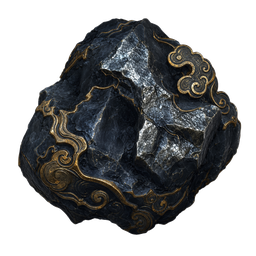
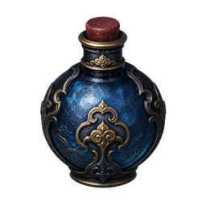
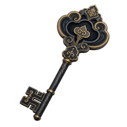

山道初试
描述
一名趁乱劫道的江湖散兵挡住去路。击退他，继续前往竹尾村。
奖励

玄铁碎片×2玄铁碎片锻造装备的基础材料。带着山火余温的黑色铁屑。

回气散×1回气散恢复少量内力，战斗中可以立即使用。

山道地图×1山道地图标记竹尾村方向的旧地图，能看出一条废弃近路。
其他奖励
金钱 +12 · 经验 +10
一名趁乱劫道的江湖散兵挡住去路。击退他，继续前往竹尾村。

玄铁碎片×2
回气散×1
山道地图×1金钱 +12 · 经验 +10